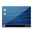

KDE Software Compilation
Dieser Artikel wurde für die folgenden Ubuntu-Versionen getestet:
Ubuntu 14.04 Trusty Tahr
Zum Verständnis dieses Artikels sind folgende Seiten hilfreich:
 Die KDE Software Compilation (kurz KDE SC) war eine Zusammenstellung von Anwendungen und Bibliotheken der KDE Community. Diese Software Compilation wurde in einem halbjährlichen Zyklus veröffentlicht, jeweils Ende Januar/Anfang Februar und Ende Juli/Anfang August des jeweiligen Jahres. Die letzte Version trug die Versionsnummer 4.14.
Die KDE Software Compilation (kurz KDE SC) war eine Zusammenstellung von Anwendungen und Bibliotheken der KDE Community. Diese Software Compilation wurde in einem halbjährlichen Zyklus veröffentlicht, jeweils Ende Januar/Anfang Februar und Ende Juli/Anfang August des jeweiligen Jahres. Die letzte Version trug die Versionsnummer 4.14.
Seitdem stellt die KDE Community keine Sammelveröffentlichung mehr bereit. Stattdessen haben Projekte wie Plasma oder die KDE Frameworks eigene Releasezyklen etabliert. Die übrigen Programme unter dem KDE-Dach, die keinen eigenen Releasezyklus haben werden ab KDE 5 alle vier Monate als "KDE Applications" veröffentlicht.
Komponenten¶
KDE Plattform¶
Zur Software Compilation gehört die KDE Plattform, um Anwendungen zu entwickeln. Diese besteht aus Bibliotheken und wichtigen Laufzeitkomponenten wie Phonon, Solid und Akonadi. Alle KDE Anwendungen bauen auf dieser Plattform auf, egal ob sie Bestandteil der Software Compilation sind oder einen eigenen Veröffentlichungszyklus verfolgen.
KDE Plasma¶
Ein weiterer zentraler Punkt der Compilation ist KDE Plasma, die Desktop-Umgebung der KDE Community. Sie besteht aus der KDE-Arbeitsfläche, dem Fenstermanager KWin, den Systemeinstellungen sowie anderen wichtigen Komponenten für die Arbeitsfläche.
KDE Anwendungen¶
Die Software Compilation bietet auch viele Anwendungen, welche nicht an die Desktop-Umgebung KDE Plasma gebunden sind. Diese Anwendungen lassen sich unter jeder von der KDE Plattform unterstützten Plattform verwenden, sei es GNOME, Xfce, Microsoft Windows, Mac OS X oder Handybetriebssysteme wie Maemo. Zu den ausgelieferten Anwendungen zählen einige Basisanwendungen, wie ein Dateimanager und Webbrowser, aber auch Spiele, Lernprogramme wie Marble, Grafikprogramme wie der Bildbetrachter und der Dokumentenbetrachter, Netzwerkprogramme, eine Personal Information Management Suite und viele mehr.
Installation¶
Eine sehr umfassende Zusammenstellung der KDE Software Compilation kann über folgendes Metapaket installiert werden [1]:
kubuntu-full (universe)
 mit apturl
mit apturl
Paketliste zum Kopieren:
sudo apt-get install kubuntu-full
sudo aptitude install kubuntu-full
KDE Komponenten¶
Möchte man nur einzelne Komponenten installieren, bieten sich folgende Metapakete [2] an:
|  | kdebase-workspace | Die Desktopumgebung KDE Plasma |
 | kdebase | Basisanwendungen wie z.B. ein Dateimanager und Webbrowser |
| kdeadmin | die Administrationswerkzeuge kde-config-cron, ksystemlog und kuser | |
 | kdeartwork | Hintergrundbilder und Designs |
| kdeedu | Lernprogramme | |
| kdegames | Spiele | |
| kdegraphics | Grafikanwendungen wie z.B. ein Bildbetrachter | |
| kdemultimedia | Multimediaanwendungen wie z.B. ein Videospieler | |
 | kdenetwork | Netzwerkanwendungen wie z.B. ein Chatprogramm |
| kdepim | Kontact | |
 | kdeplasma-addons | Zusatzkomponenten für die KDE-Arbeitsfläche |
| kdeutils | Hilfsprogramme wie ein Packprogramm |
Die Installation von KDE Plasma ist im Artikel KDE Installation beschrieben. Eine einsteigerfreundliche Anleitung für Kubuntu gibt es im Artikel Kubuntu Installation.
Links¶
KDE Programme
 Übersicht von KDE Software
Übersicht von KDE SoftwareIkhaya Artikel zur Erklärung der Zusammengehörigkeit von KDE Komponenten, 11/2009
KDE
Hauptartikel
- Erstellt mit Inyoka
-
 2004 – 2017 ubuntuusers.de • Einige Rechte vorbehalten
2004 – 2017 ubuntuusers.de • Einige Rechte vorbehalten
Lizenz • Kontakt • Datenschutz • Impressum • Serverstatus -
Serverhousing gespendet von